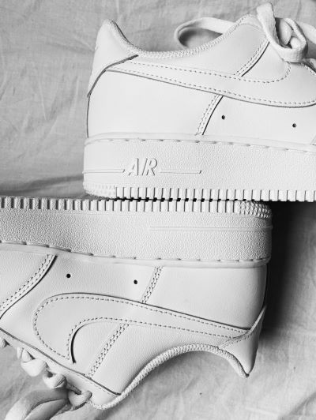

Nike redefinește performanța și stilul! De la adidași Nike pentru alergare, la sneakers Nike casual, fiecare pereche de pantofi sport Nike îți oferă confort și design modern. Descoperă colecțiile Nike Air, Nike Zoom și Nike React, perfecte pentru orice activitate. Alege Nike pentru antrenamente, Nike pentru lifestyle sau Nike pentru baschet și simte diferența! Cu Nike, ești mereu cu un pas înainte!

Nike Air Force 1 - Fotografie de Saba
Articol despre Adidas
Adidas înseamnă calitate, stil și tehnologie! Indiferent dacă alegi Adidas pentru sport sau Adidas pentru streetwear, brandul Adidas îți oferă cele mai bune opțiuni.
Modelele Adidas Superstar, Adidas Ultraboost, Adidas Gazelle și Adidas Stan Smith sunt alegerea ideală pentru un look fresh.
Nu uita de Adidas Yeezy, colecția exclusivistă creată pentru un stil inovator și confort absolut.
Alege Adidas pentru antrenamente, Adidas Originals pentru un stil clasic, Adidas Yeezy pentru un design modern și Adidas Performance pentru rezultate maxime.
Modelul Yeezy 350!Adidas este alegerea campionilor!
După cum spunea un designer celebru: Adidas este mai mult decât un brand, este o cultură.
Pentru a alege mărimea corectă, consultă tabelul de mărimi disponibil pe pagina produsului. Îți recomandăm să măsori lungimea piciorului și să compari cu ghidul brandului (Nike, Adidas, New Balance etc.). Dacă ești între mărimi, alege una mai mare pentru confort sporit.
În cât timp ajunge comanda și cât costă livrarea?
Timpul de livrare variază între 24-72 de ore, în funcție de destinație. Costul livrării este gratuit pentru comenzi peste 300 RON, iar pentru comenzi sub această sumă, taxa de transport este de 15 RON.
Pot returna sau schimba adidașii dacă nu mi se potrivesc?
Da! Ai 14 zile pentru a returna sau schimba produsul, cu condiția ca acesta să fie nepurtat și în ambalajul original. Procesul este simplu: completezi formularul de retur de pe site și trimitem curierul la tine.
Cum pot verifica dacă un produs este original?
Toți adidașii noștri sunt 100% originali, achiziționați direct de la brandurile oficiale sau distribuitori autorizați. Fiecare pereche vine cu eticheta și ambalajul original al producătorului.
Ce metode de plată acceptați?
Acceptăm plata online cu cardul, ramburs la livrare, transfer bancar și Paypal. Pentru plățile cu cardul, procesăm tranzacțiile în siguranță printr-un partener certificat.
{kind=link}